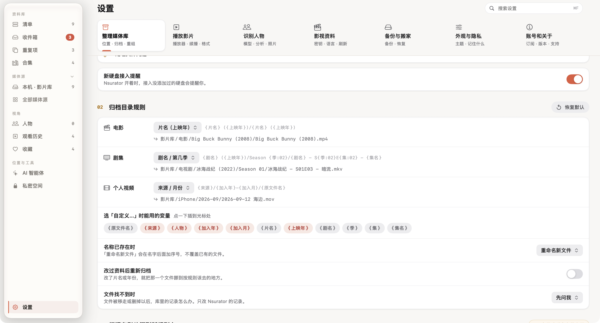
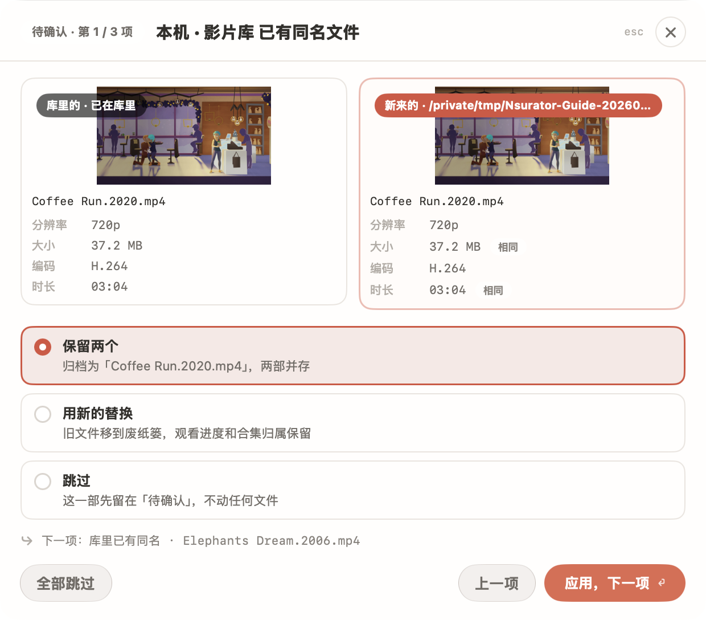

下载目录里有几份相似文件时，最有用的不是立刻清空，而是先弄清它们各自是什么。Nsurator 把新文件的归档和已有副本的比较放在不同入口，让你分开做决定。
- 设定归档后的目录结构
- 对比收件箱里的新旧文件
- 确认保留项后再处理重复副本
先让目录规则符合你的习惯
打开「设置 → 整理媒体库」，找到「归档目录规则」。电影、剧集和个人视频分别选择命名方式：电影可以按片名与上映年组织，剧集可以按季与集组织，个人视频则可按来源与月份整理。

选完规则，读一下下面的示例路径。它应当让你在访达里也能理解文件是什么，而不是只在 App 里看起来整齐。想保留更多原始信息时，可以使用自定义规则中的变量。
「名称已存在时」决定同名目标的处理方式。刚开始使用，选择「重命名新文件」比较容易分辨新旧副本；它会追加序号，而不是直接覆盖已有文件。「改过资料后重新归档」会随片名或年份变化移动文件，开启前先确认这是你需要的行为。
归档前，比较新文件和已有文件
进入「收件箱」，检查待整理影片的名称与识别结果，再查看归档确认。遇到已有同名文件时，把左右两边的来源、大小和分辨率一起看。

文件名相似不等于内容相同。不同版本可能有不同字幕、音轨或画质，不能仅凭“更大”或“更新”就决定替换。先选出想保留的版本，再按确认页提供的方式处理。
首次整理可以只挑一部电影。完成后到访达确认实际位置，再回到清单播放它；确定目录、命名和播放都符合预期，再扩大到更多文件。
在重复项里确认“留下谁”
打开侧栏「重复项」，查看每个分组的比较结果。展开一组后，能看到各副本的完整位置，以及 App 建议保留和移走的对象。右侧预览帮助你确认当前选中的是哪部影片。
本例中《Elephants Dream》的两个副本分别位于影片库和收件箱，界面标注「完全相同」。先核对保留标记指向影片库，再看按钮描述中将移走的副本数量。
- 检查影片名称和分组结论。
- 确认保留文件所在的目录。
- 确认要移走的是多余副本。
- 执行后重新查看分组与影片播放情况。
移走的副本先进入系统废纸篓。确认保留的影片正常以前，先保留废纸篓中的恢复机会。本文截图中的演示副本没有执行移走。
给整理留一个固定的小流程
每次只做一小批：新文件进收件箱，修正片名与年份，确认归档位置，再处理已经确认的重复项。这样每一步都能核对，不必依赖一次大规模批量操作。
需要把整个旧影片库改成新的目录结构时，先创建一份资料备份，再查看“把现有影片挪到新规则上”的预览。改变归档规则与实际移动旧文件是两个动作，不要把保存设置当成整理已经完成。
步骤与界面依据 2026 年 9 月的本地版本核对。部分收藏与续播进度为演示数据，图片来源见素材署名。